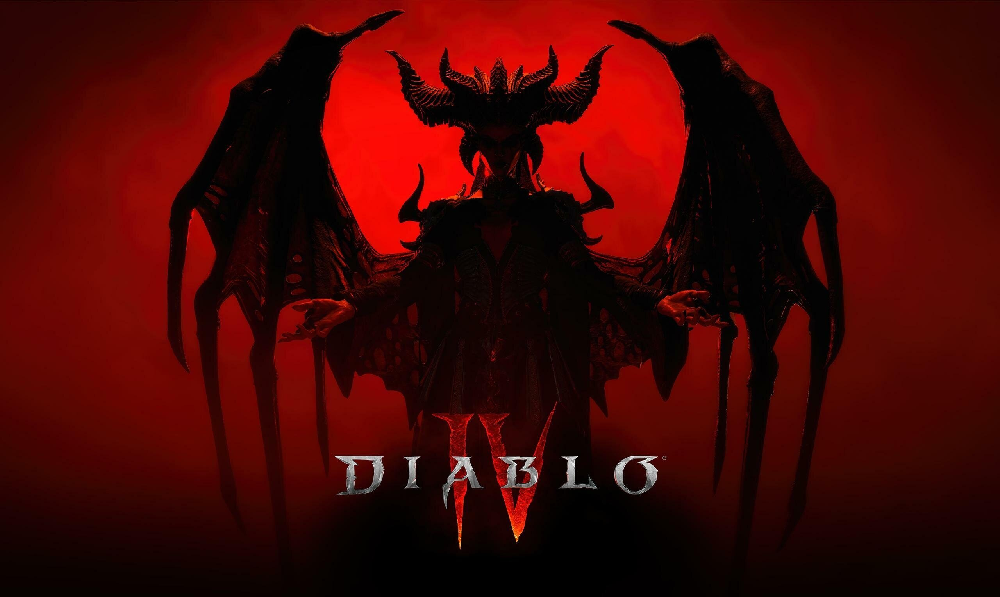

Diablo Ⅳ
디아블로 IV 는 블리자드 엔터테인먼트 에서 개발 및 배급한2023년 액션 롤플레잉 게임 입니다. 디아블로 시리즈 의 네 번째 주요 작품입니다.
이 시리즈 게임플레이의 핵심 공식은 점점 더 어려워지는 적을 물리쳐 더 강력한 장비를 점진적으로 획득하는 데 있습니다. [ 5 ] 적은 장비와 특성 트리를 통해 커스터마이즈할 수 있는 다양한 캐릭터 클래스 스킬을 사용하여 싸웁니다.
✔ 증오의 그릇 : Diablo IV 의 첫 번째 확장팩인 Vessel of Hatred 는 BlizzCon 2023 에서 발표되었습니다. [ 67 ] 이 확장팩은 Nahantu 지역을 배경으로 하며 새로운 플레이 가능 클래스인 Spiritborn을 특징으로 합니다. 이 확장팩은 2024년 10월 8일에 출시되었습니다.
✔ 증오의 군주 : 두 번째 확장팩인 Lord of Hatred 는 The Game Awards 2025 에서 발표되었습니다 . 이 확장팩은 Skovos Isles 지역을 추가하고 Paladin과 Warlock을 새로운 플레이 가능 클래스로 제공합니다. 중요한 게임플레이 변경 사항도 발표되었습니다. 2026년 4월 28일에 출시되었습니다.